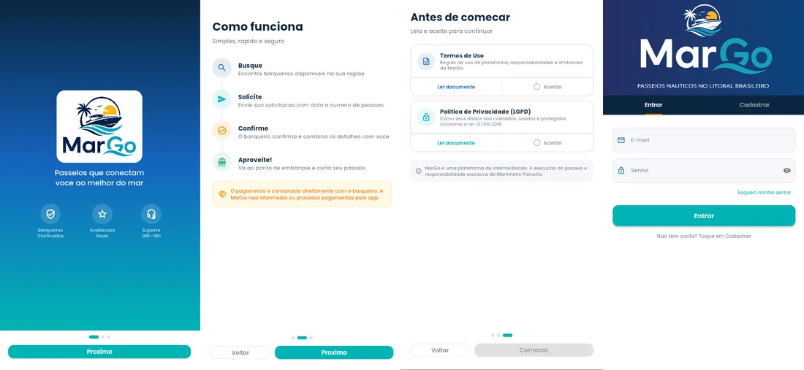

01
Sem vitrine
O barqueiro autônomo não tem onde mostrar a embarcação, os passeios e o que já fez.
A MarGo liga turistas e moradores a barqueiros verificados do litoral brasileiro. Perfil com embarcação, avaliações reais e reserva com data — sem depender de indicação.

Centenas de ilhas, praias e destinos náuticos. O que falta não é mar — é um lugar onde quem quer navegar encontre quem leva.
O barqueiro autônomo não tem onde mostrar a embarcação, os passeios e o que já fez.
O turista descobre pelo quiosque, pelo hotel ou pelo grupo de WhatsApp. Ou não descobre.
Sem referência, cada combinação começa do zero e ninguém sabe o que é caro.
Quem atende bem não acumula reputação. Quem atende mal segue igual.
Encontre barqueiros disponíveis na sua região, por destino ou categoria.
Envie o pedido com a data, o número de pessoas e um recado.
O barqueiro confirma e combina com você os detalhes do passeio.
Vá ao ponto de embarque e curta o mar. Depois, deixe sua avaliação.

 O app vira o passeio
O app vira o passeio


O valor é combinado diretamente com o barqueiro. A MarGo é plataforma de divulgação: conecta, organiza e dá reputação — não intermedeia o pagamento e não fica com um pedaço do mar.
De norte a sul o cenário se repete: barco de um lado, quem quer navegar do outro, e nada no meio. A MarGo nasce em Caraguatatuba para ser esse meio — e foi feita para rodar em qualquer litoral do país.
Os barqueiros que entrarem agora chegam ao lançamento com perfil montado, passeios cadastrados e as primeiras avaliações no currículo.